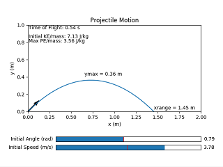
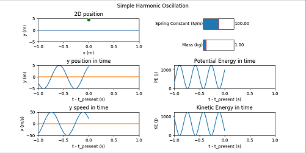
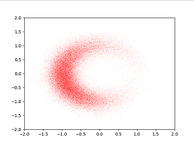

Fun and educational physics animations
This widget draws the 2D projectile motion trajectory (neglecting air friction) for an object near the surface of the Earth, with interactive sliders for setting the initial velocity and angle.
This widget shows an animation of an undamped simple harmonic oscillator, along with its velocity, acceleration, potential and kinetic energies, with interactive sliders for setting the object's spring constant and mass. The animation may not play in real-time (frequency of oscillation of the animation may differ from the value derived from k and m).
This widget is a Monte Carlo simulation of a collection of independent (non-interacting) hypothetical charged particles with normally randomized initial conditions (position and velocity), masses, and magnetic field (which, other than the random fluctuations, is uniform).
